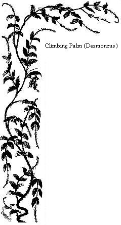

The Swampy Forests of Pará — A Portuguese Landed Proprietor — Country House at Nazareth — Life of a Naturalist under the Equator — The drier Virgin Forests —Magoary — Retired Creeks — Aborigines.
After having resided about a fortnight at Mr. Miller’s rocinha, we heard of another similar country-house to be let, much better situated for our purpose, in the village of Nazareth, a mile and a half from the city and close to the forest. The owner was an old Portuguese gentleman named Danin, who lived at his tile manufactory at the mouth of the Una, a small river lying two miles below Pará. We resolved to walk to his place through the forest, a distance of three miles, although the road was said to be scarcely passable at this season of the year, and the Una much more easily accessible by boat. We were glad, however, of this early opportunity of traversing the rich swampy forest which we had admired so much from the deck of the ship; so, about eleven o’clock one sunny morning, after procuring the necessary information about the road, we set off in that direction. This part of the forest afterwards became one of my best hunting-grounds. I will narrate the incidents of the walk, giving my first impressions and some remarks on the wonderful vegetation. The forest is very similar on most of the low lands, and therefore, one description will do for all.
On leaving the town we walked along a straight, suburban road constructed above the level of the surrounding land. It had low swampy ground on each side, built upon, however, and containing several spacious rocinhas which were embowered in magnificent foliage. Leaving the last of these, we arrived at a part where the lofty forest towered up like a wall five or six yards from the edge of the path to the height of, probably, a hundred feet. The tree trunks were only seen partially here and there, nearly the whole frontage from ground to summit being covered with a diversified drapery of creeping plants, all of the most vivid shades of green; scarcely a flower to be seen, except in some places a solitary scarlet passion-flower set in the green mantle like a star. The low ground on the borders between the forest wall and the road was encumbered with a tangled mass of bushy and shrubby vegetation, amongst which prickly mimosas were very numerous, covering the other bushes in the same way as brambles do in England. Other dwarf mimosas trailed along the ground close to the edge of the road, shrinking at the slightest touch of the feet as we passed by. Cassia trees, with their elegant pinnate foliage and conspicuous yellow flowers, formed a great proportion of the lower trees, and arborescent arums grew in groups around the swampy hollows. Over the whole fluttered a larger number of brilliantly-coloured butterflies than we had yet seen; some wholly orange or yellow (Callidryas), others with excessively elongated wings, sailing horizontally through the air, coloured black, and varied with blue, red, and yellow (Heliconii). One magnificent grassy-green species (Colænis Dido) especially attracted our attention. Near the ground hovered many other smaller species very similar in appearance to those found at home, attracted by the flowers of numerous leguminous and other shrubs. Besides butterflies, there were few other insects except dragonflies, which were in great numbers, similar in shape to English species, but some of them looking conspicuously different on account of their fiery red colours.
After stopping repeatedly to examine and admire, we at length walked onward. The road then ascended slightly, and the soil and vegetation became suddenly altered in character. The shrubs here were grasses, low sedges and other plants, smaller in foliage than those growing in moist grounds. The forest was second growth, low, consisting of trees which had the general aspect of laurels and other evergreens in our gardens at home—the leaves glossy and dark green. Some of them were elegantly veined and hairy (Melastomæ), whilst many, scattered amongst the rest, had smaller foliage (Myrtles), but these were not sufficient to subtract much from the general character of the whole.
The sun, now, for we had loitered long on the road, was exceedingly powerful. The day was most brilliant; the sky without a cloud. In fact, it was one of those glorious days which announce the commencement of the dry season. The radiation of heat from the sandy ground was visible by the quivering motion of the air above it. We saw or heard no mammals or birds; a few cattle belonging to an estate down a shady lane were congregated, panting, under a cluster of wide-spreading trees. The very soil was hot to our feet, and we hastened onward to the shade of the forest which we could see not far ahead. At length, on entering it, what a relief! We found ourselves in a moderately broad pathway or alley, where the branches of the trees crossed overhead and produced a delightful shade. The woods were at first of recent growth, dense, and utterly impenetrable; the ground, instead of being clothed with grass and shrubs as in the woods of Europe, was everywhere carpeted with Lycopodiums (fern-shaped mosses). Gradually the scene became changed. We descended slightly from an elevated, dry, and sandy area to a low and swampy one; a cool air breathed on our faces, and a mouldy smell of rotting vegetation greeted us. The trees were now taller, the underwood less dense, and we could obtain glimpses into the wilderness on all sides. The leafy crowns of the trees, scarcely two of which could be seen together of the same kind, were now far away above us, in another world as it were. We could only see at times, where there was a break above, the tracery of the foliage against the clear blue sky. Sometimes the leaves were palmate, or of the shape of large outstretched hands; at others, finely cut or feathery, like the leaves of Mimosæ. Below, the tree trunks were everywhere linked together by sipós; the woody, flexible stems of climbing and creeping trees, whose foliage is far away above, mingled with that of the taller independent trees. Some were twisted in strands like cables, others had thick stems contorted in every variety of shape, entwining snake-like round the tree trunks, or forming gigantic loops and coils amongst the larger branches; others, again, were of zigzag shape, or indented like the steps of a staircase, sweeping from the ground to a giddy height.
It interested me much afterwards to find that these climbing trees do not form any particular family. There is no distinct group of plants whose special habit is to climb, but species of many and the most diverse families, the bulk of whose members are not climbers, seem to have been driven by circumstances to adopt this habit. There is even a climbing genus of palms (Desmoncus), the species of which are called, in the Tupi language, Jacitára. These have slender, thickly-spined, and flexuous stems, which twine about the taller trees from one to the other, and grow to an incredible length. The leaves, which have the ordinary pinnate shape characteristic of the family, are emitted from the stems at long intervals, instead of being collected into a dense crown, and have at their tips a number of long recurved spines. These structures are excellent contrivances to enable the trees to secure themselves by in climbing, but they are a great nuisance to the traveller, for they sometimes hang over the pathway and catch the hat or clothes, dragging off the one or tearing the other as he passes. The number and variety of climbing trees in the Amazons forests are interesting, taken in connection with the fact of the very general tendency of the animals, also, to become climbers.
All the Amazonian, and in fact all South American, monkeys are climbers. There is no group answering to the baboons of the Old World, which live on the ground. The Gallinaceous birds of the country, the representatives of the fowls and pheasants of Asia and Africa, are all adapted by the position of the toes to perch on trees, and it is only on trees, at a great height, that they are to be seen. A genus of Plantigrade Carnivora, allied to the bears (Cercoleptes), found only in the Amazonian forests, is entirely arboreal, and has a long flexible tail like that of certain monkeys. Many other similar instances could be enumerated, but I will mention only the Geodephaga, or carnivorous ground beetles, a great proportion of whose genera and species in these forest regions are, by the structure of their feet, fitted to live exclusively on the branches and leaves of trees.
Many of the woody lianas suspended from trees are not climbers, but the air-roots of epiphytous plants (Aroideæ), which sit on the stronger boughs of the trees above and hang down straight as plumb-lines. Some are suspended singly, others in clusters; some reach halfway to the ground and others touch it, striking their rootlets into the earth. The underwood in this part of the forest was composed partly of younger trees of the same species as their taller neighbours, and partly of palms of many species, some of them twenty to thirty feet in height, others small and delicate, with stems no thicker than a finger. These latter (different kinds of Bactris) bore small bunches of fruit, red or black, often containing a sweet, grape-like juice.
Further on, the ground became more swampy and we had some difficulty in picking our way. The wild banana (Urania Amazonica) here began to appear, and, as it grew in masses, imparted a new aspect to the scene. The leaves of this beautiful plant are like broad-sword blades, eight feet in length and a foot broad; they rise straight upwards, alternately, from the top of a stem five or six feet high. Numerous kinds of plants with leaves similar in shape to these but smaller clothed the ground. Amongst them were species of Marantaceæ, some of which had broad glossy leaves, with long leaf-stalks radiating from joints in a reed-like stem. The trunks of the trees were clothed with climbing ferns, and Pothos plants with large, fleshy, heart-shaped leaves. Bamboos and other tall grass and reed-like plants arched over the pathway. The appearance of this part of the forest was strange in the extreme; description can convey no adequate idea of it. The reader who has visited Kew may form some notion by conceiving a vegetation like that in the great palm-house, spread over a large tract of swampy ground, but he must fancy it mingled with large exogenous trees similar to our oaks and elms covered with creepers and parasites, and figure to himself the ground encumbered with fallen and rotting trunks, branches, and leaves; the whole illuminated by a glowing vertical sun, and reeking with moisture.
At length we emerged from the forest, on the banks of the Una, near its mouth. It was here about one hundred yards wide. The residence of Senhor Danin stood on the opposite shore; a large building, whitewashed and red-tiled as usual, raised on wooden piles above the humid ground. The second story was the part occupied by the family, and along it was an open verandah, where people, both male and female, were at work. Below were several negroes employed carrying clay on their heads. We called out for a boat, and one of them crossed over to fetch us. Senhor Danin received us with the usual formal politeness of the Portuguese, he spoke English very well, and after we had arranged our business, we remained conversing with him on various subjects connected with the country. Like all employers in this province, he was full of one topic—the scarcity of hands. It appeared that he had made great exertions to introduce white labour, but had failed, after having brought numbers of men from Portugal and other countries under engagement to work for him. They all left him one by one soon after their arrival. The abundance of unoccupied land, the liberty that exists, a state of things produced by the half-wild canoe-life of the people, and the case with which a mere subsistence can be obtained with moderate work, tempt even the best-disposed to quit regular labour as soon as they can. He complained also of the dearness of slaves, owing to the prohibition of the African traffic, telling us that formerly a slave could be bought for 120 dollars, whereas they are now difficult to procure at 400 dollars.
Mr. Danin told us that he had travelled in England and the United States, and that he had now two sons completing their education in those countries. I afterwards met with many enterprising persons of Mr. Danin’s order, both Brazilians and Portuguese; their great ambition is to make a voyage to Europe or North America, and to send their sons to be educated there. The land on which his establishment is built, he told us, was an artificial embankment on the swamp; the end of the house was built on a projecting point overlooking the river, so that a good view was obtained, from the sitting-rooms, of the city and the shipping. We learned there was formerly a large and flourishing cattle estate on this spot, with an open grassy space like a park. On Sundays, gay parties of forty or fifty persons used to come by land and water, in carriages and gay galliotas, to spend the day with the hospitable owner. Since the political disorders which I have already mentioned, decay had come upon this as on most other large establishments in the country. The cultivated grounds, and the roads leading to them, were now entirely overgrown with dense forest. When we were ready to depart, Senhor Danin lent a canoe and two negroes to take us to the city, where we arrived in the evening after a day rich in new experiences.
Shortly afterwards, we took possession of our new residence. The house was a square building, consisting of four equal-sized rooms; the tiled roof projected all round, so as to form a broad verandah, cool and pleasant to sit and work in. The cultivated ground, which appeared as if newly cleared from the forest, was planted with fruit trees and small plots of coffee and mandioca. The entrance to the grounds was by an iron-grille gateway from a grassy square, around which were built the few houses and palm-thatched huts which then constituted the village. The most important building was the chapel of our Lady of Nazareth, which stood opposite our place. The saint here enshrined was a great favourite with all orthodox Paráenses, who attributed to her the performance of many miracles. The image was to be seen on the altar, a handsome doll about four feet high, wearing a silver crown and a garment of blue silk, studded with golden stars. In and about the chapel were the offerings that had been made to her, proofs of the miracles which she had performed. There were models of legs, arms, breasts, and so forth, which she had cured. But most curious of all was a ship’s boat, deposited here by the crew of a Portuguese vessel which had foundered, a year or two before our arrival, in a squall off Cayenne; part of them having been saved in the boat, after invoking the protection of the saint here enshrined. The annual festival in honour of our Lady of Nazareth is the greatest of the Pará holidays; many persons come to it from the neighbouring city of Maranham, 300 miles distant. Once the President ordered the mail steamer to be delayed two days at Pará for the convenience of these visitors. The popularity of the festival is partly owing to the beautiful weather that prevails when it takes place, namely, in the middle of the fine season, on the ten days preceding the full moon in October or November. Pará is then seen at its best. The weather is not too dry, for three weeks never follow in succession without a shower; so that all the glory of verdure and flowers can be enjoyed with clear skies. The moonlit nights are then especially beautiful, the atmosphere is transparently clear, and the light sea-breeze produces an agreeable coolness.
We now settled ourselves for a few months’ regular work. We had the forest on three sides of us; it was the end of the wet season; most species of birds had finished moulting, and every day the insects increased in number and variety. Behind the rocinha, after several days’ exploration, I found a series of pathways through the woods, which led to the Una road; about half way was the house in which the celebrated travellers Spix and Martius resided during their stay at Pará, in 1819. It was now in a neglected condition, and the plantations were overgrown with bushes. The paths hereabout were very productive of insects, and being entirely under shade, were very pleasant for strolling. Close to our doors began the main forest road. It was broad enough for two horsemen abreast, and branched off in three directions; the main line going to the village of Ourem, a distance of fifty miles. This road formerly extended to Maranham, but it had been long in disuse and was now grown up, being scarcely passable between Pará and Ourem.
Our researches were made in various directions along these paths, and every day produced us a number of new and interesting species. Collecting, preparing our specimens, and making notes, kept us well occupied. One day was so much like another, that a general description of the diurnal round of incidents, including the sequence of natural phenomena, will be sufficient to give an idea of how days pass to naturalists under the equator.
We used to rise soon after dawn, when Isidoro would go down to the city, after supplying us with a cup of coffee, to purchase the fresh provisions for the day. The two hours before breakfast were devoted to ornithology. At that early period of the day the sky was invariably cloudless (the thermometer marking 72° or 73° Fahr.); the heavy dew or the previous night’s rain, which lay on the moist foliage, becoming quickly dissipated by the glowing sun, which rising straight out of the east, mounted rapidly towards the zenith. All nature was fresh, new leaf and flower-buds expanding rapidly. Some mornings a single tree would appear in flower amidst what was the preceding evening a uniform green mass of forest—a dome of blossom suddenly created as if by magic. The birds were all active; from the wild-fruit trees, not far off, we often heard the shrill yelping of the Toucans (Ramphastos vitellinus). Small flocks of parrots flew over on most mornings, at a great height, appearing in distinct relief against the blue sky, always two-by-two chattering to each other, the pairs being separated by regular intervals; their bright colours, however, were not apparent at that height. After breakfast we devoted the hours from 10 a.m. to 2 or 3 p.m. to entomology; the best time for insects in the forest being a little before the greatest heat of the day.
The heat increased rapidly towards two o’clock (92° and 93° Fahr.), by which time every voice of bird or mammal was hushed; only in the trees was heard at intervals the harsh whirr of a cicada. The leaves, which were so moist and fresh in early morning, now become lax and drooping; the flowers shed their petals. Our neighbours, the Indian and Mulatto inhabitants of the open palm-thatched huts, as we returned home fatigued with our ramble, were either asleep in their hammocks or seated on mats in the shade, too languid even to talk. On most days in June and July a heavy shower would fall some time in the afternoon, producing a most welcome coolness. The approach of the rain-clouds was after a uniform fashion very interesting to observe. First, the cool sea-breeze, which commenced to blow about ten o’clock, and which had increased in force with the increasing power of the sun, would flag and finally die away. The heat and electric tension of the atmosphere would then become almost insupportable. Languor and uneasiness would seize on every one, even the denizens of the forest, betraying it by their motions. White clouds would appear in the cast and gather into cumuli, with an increasing blackness along their lower portions. The whole eastern horizon would become almost suddenly black, and this would spread upwards, the sun at length becoming obscured. Then the rush of a mighty wind is heard through the forest, swaying the tree-tops; a vivid flash of lightning bursts forth, then a crash of thunder, and down streams the deluging rain. Such storms soon cease, leaving bluish-black, motionless clouds in the sky until night. Meantime all nature is refreshed; but heaps of flower-petals and fallen leaves are seen under the trees. Towards evening life revives again, and the ringing uproar is resumed from bush and tree. The following morning the sun again rises in a cloudless sky, and so the cycle is completed; spring, summer, and autumn, as it were, in one tropical day. The days are more or less like this throughout the year in this country. A little difference exists between the dry and wet seasons; but generally, the dry season, which lasts from July to December, is varied with showers, and the wet, from January to June, with sunny days. It results from this, that the periodical phenomena of plants and animals do not take place at about the same time in all species, or in the individuals of any given species, as they do in temperate countries. Of course there is no hybernation; nor, as the dry season is not excessive, is there any summer torpidity as in some tropical countries. Plants do not flower or shed their leaves, nor do birds moult, pair, or breed simultaneously. In Europe, a woodland scene has its spring, its summer, its autumn, and its winter aspects. In the equatorial forests the aspect is the same or nearly so every day in the year: budding, flowering, fruiting, and leaf shedding are always going on in one species or other. The activity of birds and insects proceeds without interruption, each species having its own separate times; the colonies of wasps, for instance, do not die off annually, leaving only the queens, as in cold climates; but the succession of generations and colonies goes on incessantly. It is never either spring, summer, or autumn, but each day is a combination of all three. With the day and night always of equal length, the atmospheric disturbances of each day neutralising themselves before each succeeding morn; with the sun in its course proceeding midway across the sky, and the daily temperature the same within two or three degrees throughout the year—how grand in its perfect equilibrium and simplicity is the march of Nature under the equator!
Our evenings were generally fully employed preserving our collections, and making notes. We dined at four, and took tea about seven o’clock. Sometimes we walked to the city to see Brazilian life or enjoy the pleasures of European and American society. And so the time passed away from June 15th to August 26th. During this period we made two excursions of greater length to the rice and saw-mills of Magoary, an establishment owned by an American gentleman, Mr. Upton, situated on the banks of a creek in the heart of the forest, about twelve miles from Pará. I will narrate some of the incidents of these excursions, and give an account of the more interesting observations made on the Natural History and inhabitants of these interior creeks and forests.
Our first trip to the mills was by land. The creek on whose banks they stand, the Iritirí, communicates with the river Pará, through another larger creek, the Magoary; so that there is a passage by water; but this is about twenty miles round. We started at sunrise, taking Isidoro with us. The road plunged at once into the forest after leaving Nazareth, so that in a few minutes we were enveloped in shade. For some distance the woods were of second growth, the original forest near the town having been formerly cleared or thinned. They were dense and impenetrable on account of the close growth of the young trees and the mass of thorny shrubs and creepers. These thickets swarmed with ants and ant-thrushes; they were also frequented by a species of puff-throated manikin, a little bird which flies occasionally across the road, emitting a strange noise, made, I believe, with its wings, and resembling the clatter of a small wooden rattle.
A mile or a mile and a half further on, the character of the woods began to change, and we then found ourselves in the primæval forest. The appearance was greatly different from that of the swampy tract I have already described. The land was rather more elevated and undulating; the many swamp plants with their long and broad leaves were wanting, and there was less underwood, although the trees were wider apart. Through this wilderness the road continued for seven or eight miles. The same unbroken forest extends all the way to Maranham and in other directions, as we were told, a distance of about 300 miles southward and eastward of Pará. In almost every hollow part the road was crossed by a brook, whose cold, dark, leaf-stained waters were bridged over by tree trunks. The ground was carpeted, as usual, by Lycopodiums, but it was also encumbered with masses of vegetable débris and a thick coating of dead leaves. Fruits of many kinds were scattered about, amongst which were many sorts of beans, some of the pods a foot long, flat and leathery in texture, others hard as stone. In one place there was a quantity of large empty wooden vessels, which Isidoro told us fell from the Sapucaya tree. They are called Monkey’s drinking-cups (Cuyas de Macaco), and are the capsules which contain the nuts sold under the name just mentioned, in Covent Garden Market. At the top of the vessel is a circular hole, in which a natural lid fits neatly. When the nuts are ripe this lid becomes loosened and the heavy cup falls with a crash, scattering the nuts over the ground. The tree which yields the nut (Lecythis ollaria), is of immense height. It is closely allied to the Brazil-nut tree (Bertholletia excelsa), whose seeds are also enclosed in large woody vessels; but these have no lid, and fall to the ground intact. This is the reason why the one kind of nut is so much dearer than the other. The Sapucaya is not less abundant, probably, than the Bertholletia, but its nuts in falling are scattered about and eaten by wild animals; whilst the full, whole capsules of Brazil-nuts are collected by the natives.
What attracted us chiefly were the colossal trees. The general run of trees had not remarkably thick stems; the great and uniform height to which they grow without emitting a branch, was a much more noticeable feature than their thickness; but at intervals of a furlong or so a veritable giant towered up. Only one of these monstrous trees can grow within a given space; it monopolises the domain, and none but individuals of much inferior size can find a footing near it. The cylindrical trunks of these larger trees were generally about twenty to twenty-five feet in circumference. Von Martius mentions having measured trees in the Pará district belonging to various species (Symphonia coccinea, Lecythis sp. and Cratæva Tapia), which were fifty to sixty feet in girth at the point where they become cylindrical. The height of the vast column-like stems could not be less than 100 feet from the ground to their lowest branch. Mr. Leavens, at the sawmills, told me they frequently squared logs for sawing a hundred feet long, of the Pao d’Arco and the Massaranduba. The total height of these trees, stem and crown together, may be estimated at from 180 to 200 feet; where one of them stands, the vast dome of foliage rises above the other forest trees as a domed cathedral does above the other buildings in a city.
A very remarkable feature in these trees is the growth of buttress-shaped projections around the lower part of their stems. The spaces between these buttresses, which are generally thin walls of wood, form spacious chambers, and may be compared to stalls in a stable; some of them are large enough to hold a half-dozen persons. The purpose of these structures is as obvious, at the first glance, as that of the similar props of brickwork which support a high wall. They are not peculiar to one species, but are common to most of the larger forest trees. Their nature and manner of growth are explained when a series of young trees of different ages is examined. It is then seen that they are the roots which have raised themselves ridge-like out of the earth; growing gradually upwards as the increasing height of the tree required augmented support. Thus, they are plainly intended to sustain the massive crown and trunk in these crowded forests, where lateral growth of the roots in the earth is rendered difficult by the multitude of competitors.
The other grand forest trees whose native names we learned, were the Moira-tinga (the White or King-tree), probably the same as, or allied to, the Mora Excelsa, which Sir Robert Schomburgh discovered in British Guiana; the Samauma (Eriodendron Samauma) and the Massaranduba, or Cow-tree. The last-mentioned is the most remarkable. We had already heard a good deal about this tree, and about its producing from its bark a copious supply of milk as pleasant to drink as that of the cow. We had also eaten its fruit in Pará, where it is sold in the streets by negro market women; and had heard a good deal of the durableness in water of its timber. We were glad, therefore, to see this wonderful tree growing in its native wilds. It is one of the largest of the forest monarchs, and is peculiar in appearance on account of its deeply-scored reddish and ragged bark. A decoction of the bark, I was told, is used as a red dye for cloth. A few days afterwards we tasted its milk, which was drawn from dry logs that had been standing many days in the hot sun, at the saw-mills. It was pleasant with coffee, but had a slight rankness when drunk pure; it soon thickens to a glue, which is excessively tenacious, and is often used to cement broken crockery. I was told that it was not safe to drink much of it, for a slave had recently nearly lost his life through taking it too freely.
In some parts of the road ferns were conspicuous objects. But I afterwards found them much more numerous on the Maranham road, especially in one place where the whole forest glade formed a vast fernery; the ground was covered with terrestrial species, and the tree trunks clothed with climbing and epiphytous kinds. I saw no tree ferns in the Pará district; they belong to hilly regions; some occur, however, on the Upper Amazons.
Such were the principal features in the vegetation of the wilderness; but where were the flowers? To our great disappointment we saw none, or only such as were insignificant in appearance. Orchids are very rare in the dense forests of the low lands. I believe it is now tolerably well ascertained that the majority of forest trees in equatorial Brazil have small and inconspicuous flowers. Flower-frequenting insects are also rare in the forest. Of course they would not be found where their favourite food was wanting, but I always noticed that even where flowers occurred in the forest, few or no insects were seen upon them. In the open country or campos of Santarem on the Lower Amazons, flowering trees and bushes are more abundant, and there a large number of floral insects are attracted. The forest bees of South America belonging to the genera Melipona and Euglossa are more frequently seen feeding on the sweet sap which exudes from the trees or on the excrement of birds on leaves, rather than on flowers.
We were disappointed also in not meeting with any of the larger animals in the forest. There was no tumultuous movement, or sound of life. We did not see or hear monkeys, and no tapir or jaguar crossed our path. Birds, also, appeared to be exceedingly scarce. We heard, however, occasionally, the long-drawn, wailing note of the Inambu, a kind of partridge (Crypturus cinereus?); and, also, in the hollows on the banks, of the rivulets, the noisy notes of another bird, which seemed to go in pairs, amongst the tree-tops, calling to each other as they went. These notes resounded through the wilderness. Another solitary bird had a most sweet and melancholy song; it consisted simply of a few notes, uttered in a plaintive key, commencing high, and descending by harmonic intervals. It was probably a species of warbler of the genus Trichas. All these notes of birds are very striking and characteristic of the forest.
I afterwards saw reason to modify my opinion, founded on these first impressions, with regard to the amount and variety of animal life in this and other parts of the Amazonian forests. There is, in fact, a great variety of mammals, birds, and reptiles, but they are widely scattered, and all excessively shy of man. The region is so extensive, and uniform in the forest clothing of its surface, that it is only at long intervals that animals are seen in abundance when some particular spot is found which is more attractive than others. Brazil, moreover, is poor throughout in terrestrial mammals, and the species are of small size; they do not, therefore, form a conspicuous feature in its forests. The huntsman would be disappointed who expected to find here flocks of animals similar to the buffalo herds of North America, or the swarms of antelopes and herds of ponderous pachyderms of Southern Africa. The largest and most interesting portion of the Brazilian mammal fauna is arboreal in its habits; this feature of the animal denizens of these forests I have already alluded to. The most intensely arboreal animals in the world are the South American monkeys of the family Cebidæ, many of which have a fifth hand for climbing in their prehensile tails, adapted for this function by their strong muscular development, and the naked palms under their tips. This seems to teach us that the South American fauna has been slowly adapted to a forest life, and, therefore, that extensive forests must have always existed since the region was first peopled by mammalia. But to this subject, and to the natural history of the monkeys, of which thirty-eight species inhabit the Amazon region, I shall have to return.
We often read, in books of travels, of the silence and gloom of the Brazilian forests. They are realities, and the impression deepens on a longer acquaintance. The few sounds of birds are of that pensive or mysterious character which intensifies the feeling of solitude rather than imparts a sense of life and cheerfulness. Sometimes, in the midst of the stillness, a sudden yell or scream will startle one; this comes from some defenseless fruit-eating animal, which is pounced upon by a tiger-cat or stealthy boa-constrictor. Morning and evening the howling monkeys make a most fearful and harrowing noise, under which it is difficult to keep up one’s buoyancy of spirit. The feeling of inhospitable wildness, which the forest is calculated to inspire, is increased tenfold under this fearful uproar. Often, even in the still hours of midday, a sudden crash will be heard resounding afar through the wilderness, as some great bough or entire tree falls to the ground. There are, besides, many sounds which it is impossible to account for. I found the natives generally as much at a loss in this respect as myself. Sometimes a sound is heard like the clang of an iron bar against a hard, hollow tree, or a piercing cry rends the air; these are not repeated, and the succeeding silence tends to heighten the unpleasant impression which they make on the mind. With the native it is always the Curupíra, the wild man or spirit of the forest, which produces all noises they are unable to explain. For myths are the rude theories which mankind, in the infancy of knowledge, invent to explain natural phenomena. The Curupíra is a mysterious being, whose attributes are uncertain, for they vary according to locality. Sometimes he is described as a kind of orang-otang, being covered with long, shaggy hair, and living in trees. At others, he is said to have cloven feet and a bright red face. He has a wife and children, and sometimes comes down to the roças to steal the mandioca. At one time I had a Mameluco youth in my service, whose head was full of the legends and superstitions of the country. He always went with me into the forest; in fact, I could not get him to go alone, and whenever we heard any of the strange noises mentioned above, he used to tremble with fear. He would crouch down behind me, and beg of me to turn back; his alarm ceasing only after he had made a charm to protect us from the Curupíra. For this purpose, he took a young palm leaf, plaited it, and formed it into a ring, which he hung to a branch on our track.
At length, after a six hours’ walk, we arrived at our destination, the last mile or two having been again through second-growth forest. The mills formed a large pile of buildings, pleasantly situated in a cleared tract of land, many acres in extent, and everywhere surrounded by the perpetual forest. We were received in the kindest manner by the overseer, Mr. Leavens, who showed us all that was interesting about the place, and took us to the best spots in the neighbourhood for birds and insects. The mills were built a long time ago by a wealthy Brazilian. They had belonged to Mr. Upton for many years. I was told that when the dark-skinned revolutionists were preparing for their attack on Pará, they occupied the place, but not the slightest injury was done to the machinery or building, for the leaders said it was against the Portuguese and their party that they were at war, not against the other foreigners.
The creek Iritirí at the mills is only a few yards wide; it winds about between two lofty walls of forest for some distance, then becomes much broader, and finally joins the Magoary. There are many other ramifications, creeks or channels, which lead to retired hamlets and scattered houses, inhabited by people of mixed white, Indian, and negro descent. Many of them did business with Mr. Leavens, bringing for sale their little harvests of rice, or a few logs of timber. It was interesting to see them in their little, heavily-laden montarias. Sometimes the boats were managed by handsome, healthy young lads, loosely clad in a straw hat, white shirt, and dark blue trousers, turned up to the knee. They steered, paddled, and managed the varejao (the boating pole), with much grace and dexterity.
We made many excursions down the Iritirí, and saw much of these creeks; besides, our second visit to the mills was by water. The Magoary is a magnificent channel; the different branches form quite a labyrinth, and the land is everywhere of little elevation. All these smaller rivers, throughout the Pará Estuary, are of the nature of creeks. The land is so level, that the short local rivers have no sources and downward currents like rivers as we generally understand them. They serve the purpose of draining the land, but instead of having a constant current one way, they have a regular ebb and flow with the tide. The natives call them, in the Tupí language, Igarapés, or canoe-paths. The igarapés and furos or channels, which are infinite in number in this great river delta, are characteristic of the country. The land is everywhere covered with impenetrable forests; the houses and villages are all on the waterside, and nearly all communication is by water. This semi-aquatic life of the people is one of the most interesting features of the country. For short excursions, and for fishing in still waters, a small boat, called montaria, is universally used. It is made of five planks; a broad one for the bottom, bent into the proper shape by the action of heat, two narrow ones for the sides, and two small triangular pieces for stem and stern. It has no rudder; the paddle serves for both steering and propelling. The montaria takes here the place of the horse, mule, or camel of other regions. Besides one or more montarias, almost every family has a larger canoe, called Igarité. This is fitted with two masts, a rudder, and keel, and has an arched awning or cabin near the stern, made of a framework of tough lianas thatched with palm leaves. In the igarité they will cross stormy rivers fifteen or twenty miles broad. The natives are all boat-builders. It is often remarked, by white residents, that an Indian is a carpenter and shipwright by intuition. It is astonishing to see in what crazy vessels these people will risk themselves. I have seen Indians cross rivers in a leaky montaria, when it required the nicest equilibrium to keep the leak just above water; a movement of a hair’s breadth would send all to the bottom, but they managed to cross in safety. They are especially careful when they have strangers under their charge, and it is the custom of Brazilian and Portuguese travellers to leave the whole management to them. When they are alone they are more reckless, and often have to swim for their lives. If a squall overtakes them as they are crossing in a heavily-laden canoe, they all jump overboard and swim about until the heavy sea subsides, then they re-embark.
A few words on the aboriginal population of the Pará estuary will not be out of place here. The banks of the Pará were originally inhabited by a number of distinct tribes, who, in their habits, resembled very much the natives of the sea-coast from Maranham to Bahia. It is related that one large tribe, the Tupinambas, migrated from Pernambuco to the Amazons. One fact seems to be well-established, namely, that all the coast tribes were far more advanced in civilisation, and milder in their manners, than the savages who inhabited the interior lands of Brazil. They were settled in villages, and addicted to agriculture. They navigated the rivers in large canoes, called ubas, made of immense hollowed-out tree trunks; in these they used to go on war expeditions, carrying in the prows their trophies and calabash rattles, whose clatter was meant to intimidate their enemies. They were gentle in disposition, and received the early Portuguese settlers with great friendliness. The inland savages, on the other hand, led a wandering life, as they do at the present time, only coming down occasionally to rob the plantations of the coast tribes, who always entertained the greatest enmity towards them.
The original Indian tribes of the district are now either civilised, or have amalgamated with the white and negro immigrants. Their distinguishing tribal names have long been forgotten, and the race bears now the general appellation of Tapuyo, which seems to have been one of the names of the ancient Tupinambas. The Indians of the interior, still remaining in the savage state, are called by the Brazilians Indios, or Gentios (Heathens). All the semi-civilised Tapuyos of the villages, and in fact the inhabitants of retired places generally, speak the Lingoa geral, a language adapted by the Jesuit missionaries from the original idiom of the Tupinambas. The language of the Guaranis, a nation living on the banks of the Paráguay, is a dialect of it, and hence it is called by philologists the Tupi-Guarani language; printed grammars of it are always on sale at the shops of the Pará booksellers. The fact of one language having been spoken over so wide an extent of country as that from the Amazons to Paráguay, is quite an isolated one in this country, and points to considerable migrations of the Indian tribes in former times. At present the languages spoken by neighbouring tribes on the banks of the interior rivers are totally distinct; on the Juruá, even scattered hordes belonging to the same tribe are not able to understand each other.
The civilised Tapuyo of Pará differs in no essential point, in physical or moral qualities, from the Indian of the interior. He is more stoutly built, being better fed than some of them; but in this respect there are great differences amongst the tribes themselves. He presents all the chief characteristics of the American red man. The skin of a coppery brown colour, the features of the face broad, and the hair black, thick, and straight. He is generally about the middle height, thick-set, has a broad muscular chest, well-shaped but somewhat thick legs and arms, and small hands and feet. The cheek bones are not generally prominent; the eyes are black, and seldom oblique like those of the Tartar races of Eastern Asia, which are supposed to have sprung from the same original stock as the American red man. The features exhibit scarcely any mobility of expression; this is connected with the excessively apathetic and undemonstrative character of the race. They never betray, in fact they do not feel keenly, the emotions of joy, grief, wonder, fear, and so forth. They can never be excited to enthusiasm; but they have strong affections, especially those connected with family. It is commonly stated by the whites and negroes that the Tapuyo is ungrateful. Brazilian mistresses of households, who have much experience of Indians, have always a long list of instances to relate to the stranger, showing their base ingratitude. They certainly do not appear to remember or think of repaying benefits, but this is probably because they did not require, and do not value such benefits as their would-be masters confer upon them. I have known instances of attachment and fidelity on the part of Indians towards their masters, but these are exceptional cases. All the actions of the Indian show that his ruling desire is to be let alone; he is attached to his home, his quiet monotonous forest and river life; he likes to go to towns occasionally, to see the wonders introduced by the white man, but he has a great repugnance to living in the midst of the crowd; he prefers handicraft to field labour, and especially dislikes binding himself to regular labour for hire. He is shy and uneasy before strangers, but if they visit his abode, he treats them well, for he has a rooted appreciation of the duty of hospitality; there is a pride about him, and being naturally formal and polite, he acts the host with great dignity. He withdraws from towns as soon as the stir of civilisation begins to make itself felt. When we first arrived at Pará many Indian families resided there, for the mode of living at that time was more like that of a large village than a city; but as soon as river steamers and more business activity were introduced, they all gradually took themselves away.
These characteristics of the Pará Indians are applicable, of course, to some extent, to the Mamelucos, who now constitute a great proportion of the population. The inflexibility of character of the Indian, and his total inability to accommodate himself to new arrangements, will infallibly lead to his extinction, as immigrants, endowed with more supple organisations, increase, and civilisation advances in the Amazon region. But, as the different races amalgamate readily, and the offspring of white and Indian often become distinguished Brazilian citizens, there is little reason to regret the fate of the race. Formerly the Indian was harshly treated, and even now he is so, in many parts of the interior. But, according to the laws of Brazil, he is a free citizen, having equal privileges with the whites; and there are very strong enactments providing against the enslaving and ill-treatment of the Indians. The residents of the interior, who have no higher principles to counteract instinctive selfishness or antipathy of race, cannot comprehend why they are not allowed to compel Indians to work for them, seeing that they will not do it of their own accord. The inevitable result of the conflict of interests between a European and a weaker indigenous race, when the two come in contact, is the sacrifice of the latter. In the Pará district, the Indians are no longer enslaved, but they are deprived of their lands, and this they feel bitterly, as one of them, an industrious and worthy man, related to me. Is not a similar state of things now exhibited in New Zealand, between the Maoris and the English colonists?
It is very interesting to read of the bitter contests that were carried on from the year 1570 to 1759, between the Portuguese immigrants in Brazil, and the Jesuit and other missionaries. They were similar to those which have recently taken place in South Africa, between the Boers and the English missionaries, but they were on a much larger scale. The Jesuits, as far as I could glean from tradition and history, were actuated by the same motives as our missionaries; and they seemed like them to have been, in great measure, successful, in teaching the pure and elevated Christian morality to the simple natives. But the attempt was vain to protect the weaker race from the inevitable ruin which awaited it in the natural struggle with the stronger one; in 1759, the white colonists finally prevailed, the Jesuits were forced to leave the country, and the fifty-one happy mission villages went to ruin. Since then, the aboriginal race has gone on decreasing in numbers under the treatment which it has received; it is now, as I have already stated, protected by the laws of the central government.
On our second visit to the mills, we stayed ten days. There is a large reservoir and also a natural lake near the place, both containing aquatic plants, whose leaves rest on the surface like our water lilies, but they are not so elegant as our nymphæa, either in leaf or flower. On the banks of these pools grow quantities of a species of fan-leaved palm tree, the Carana, whose stems are surrounded by whorls of strong spines. I sometimes took a montaria, and paddled myself alone down the creek. One day I got upset, and had to land on a grassy slope leading to an old plantation, where I ran about naked whilst my clothes were being dried on a bush. The creek Iritirí is not so picturesque as many others which I subsequently explored. Towards the Magoary, the banks at the edge of the water are clothed with mangrove bushes, and beneath them the muddy banks into which the long roots that hang down from the fruit before it leaves the branches strike their fibres, swarm with crabs. On the lower branches the beautiful bird, Ardea helias, is found. This is a small heron of exquisitely graceful shape and mien; its plumage is minutely variegated with bars and spots of many colours, like the wings of certain kinds of moths. It is difficult to see the bird in the woods, on account of its sombre colours, and the shadiness of its dwelling-places; but its note, a soft long-drawn whistle, often betrays its hiding place. I was told by the Indians that it builds in trees, and that the nest, which is made of clay, is beautifully constructed. It is a favourite pet-bird of the Brazilians, who call it Pavao (pronounced Pavaong), or peacock. I often had opportunities to observe its habits. It soon becomes tame, and walks about the floors of houses picking up scraps of food or catching insects, which it secures by walking gently to the place where they settle, and spearing them with its long, slender beak. It allows itself to be handled by children, and will answer to its name “Pavao! Pavao!” walking up with a dainty, circumspect gait, and taking a fly or beetle from the hand.
During these rambles by land and water we increased our collections considerably. Before we left the mills, we arranged a joint excursion to the Tocantins. Mr. Leavens wished to ascend that river to ascertain if the reports were true, that cedar grew abundantly between the lowermost cataract and the mouth of the Araguava, and we agreed to accompany him.
Whilst we were at the mills, a Portuguese trader arrived with a quantity of worm-eaten logs of this cedar, which he had gathered from the floating timber in the current of the main Amazons. The tree producing this wood, which is named cedar on account of the similarity of its aroma to that of the true cedars, is not, of course, a coniferous tree, as no member of that class is found in equatorial America, at least in the Amazons region. It is, according to Von Martius, the Cedrela Odorata, an exogen belonging to the same order as the mahogany tree. The wood is light, and the tree is therefore, on falling into the water, floated down with the river currents. It must grow in great quantities somewhere in the interior, to judge from the number of uprooted trees annually carried to the sea, and as the wood is much esteemed for cabinet work and canoe building, it is of some importance to learn where a regular supply can be obtained. We were glad of course to arrange with Mr. Leavens, who was familiar with the language, and an adept in river navigation—so we returned to Pará to ship our collections for England, and prepare for the journey to a new region.